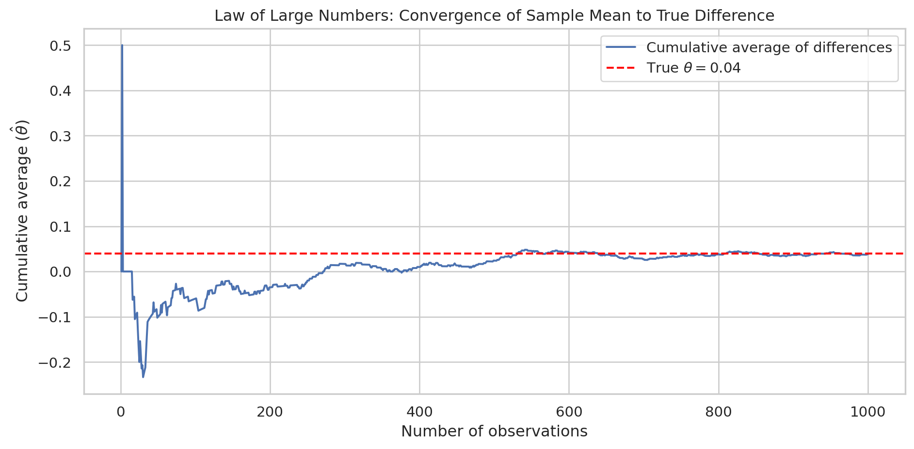
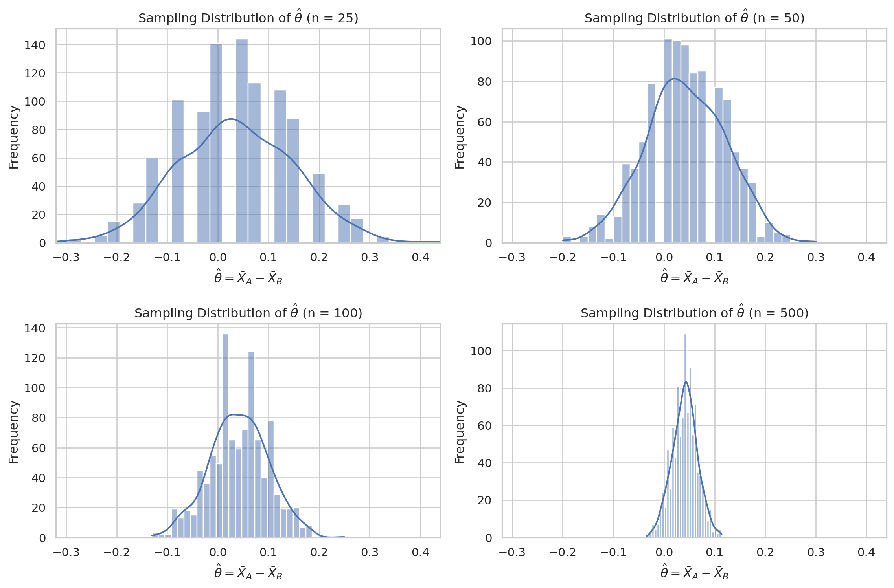

import numpy as np
import seaborn as sns
import matplotlib.pyplot as plt
# Random seed for reproducible results
np.random.seed(42)
# Number of draws
N = 1000
# Simulation of CTA A
A_draws = np.random.binomial(n=1,p=0.22,size=N)
# Simulation of CTA B
B_draws = np.random.binomial(n=1,p=0.18,size=N)A/B Testing a Call to Action
Simulating Key Ideas from Classical Frequentist Statistics
Introduction
Note
In this section, we’ll start with a basic scenario to explain A/B testing:
You just launched your new website. Your landing page includes a place where visitors can sign up to receive your newsletter. You have two possible “calls to action” (CTAs). CTA A states “Sign up for our newsletter here!” and CTA B states “Stay up to date by signing up!”. You want to know which of the two CTAs leads to more sign-ups.
You decide to randomly assign visitors to see one of the two CTAs, and then compare sign-up rates between the two groups. This is a fundamental component of A/B testing: visitors must be randomly assigned to ensure that each subject has an equal probability of being exposed to a CTA, reducing any bias. This means that the only difference between the two groups is the CTA itself.
The A/B Test as a Statistical Problem
Note
In this section, we will connect the A/B test to a formal statistical framework.
Each visitor either signs up or does not, so we can model each visitor’s outcome as a draw from a Bernoulli (binomial) distribution with parameter \(\pi\), the probability of signing up. Because the CTA a visitor sees may influence their probability of signing up, we allow the parameter to differ across groups: visitors who see CTA A have sign-up probability \(\pi_A\), and visitors who see CTA B have sign-up probability \(\pi_B\). Each visitor can either sign up (1) or not (0).
The outcome metric we care about is \(\theta = \pi_A - \pi_B\), the difference in sign-up rates between the two CTAs. Our estimator of \(\theta\) is the difference in sample means, \(\hat\theta = \bar{X}_A - \bar{X}_B\). Since each observation is either 0 or 1, the sample mean is simply the proportion of visitors who signed up — so \(\bar{X}_A = \hat\pi_A\) and \(\bar{X}_B = \hat\pi_B\).
We can define \(\hat\pi_A\) and \(\hat\pi_B\) as follows: \[ \hat\pi_A = \frac{x_A}{n_A}, \hat\pi_B = \frac{x_B}{n_B} \] where:
- \(x_A,\ x_B\) denotes the numbers of successes (sign-ups)
- \(n_A,\ n_B\) denotes the sample sizes (number of visitors).
Simulating Data
Note
In the real world, we would not know the true values of \(\pi_A\) and \(\pi_B\) because they are population-level sign-up probabilities. We cannot observe every possible visitor who could ever see CTA A or CTA B. However, we can use a sample to estimate the underlying probabilities. We can construct these samples by simulating data so that we can check whether our estimator is working the way we expect.
Suppose \(\pi_A = 0.22\) and \(\pi_B = 0.18\), so the true difference is \(\theta = 0.04\).
In the code below, we will simulate 1,000 draws from two Bernoulli distributions with the probabilities we chose. By doing this simulation, we can mimic the randomness of real experiments in a controlled environment.
The Law of Large Numbers
Note
The Law of Large Numbers states that as the sample size increases, the sample mean converges to the true population mean. In the A/B testing setting, this means that the sample sign-up rates \(\hat{\pi}_A\) and \(\hat{\pi}_B\) get closer to the true sign-up probabilities \(\pi_A\) and \(\pi_B\) as the number of observations in each group becomes large. The LLN is what gives us confidence that \(\hat\theta = \bar{X}_A - \bar{X}_B\) will be close to the true \(\theta\) when our sample is large enough.
Using the simulated data from the previous section, we will compute the element-wise differences between the CTA A draws and the CTA B draws to get a vector of 1,000 differences. Then we will the cumulative average of that vector (i.e., the running mean after 1 draw, after 2 draws, …, after 1,000 draws) and plot it against the number of observations.
The plot should show a noisy average when only a few observations are included that settles down and converges toward the true difference of 0.04 as the sample size grows.
After the plot, write a few sentences explaining what the reader should take away from it.
# Element-wise differences
differences = A_draws - B_draws
# Cumulative average (running mean)
cumulative_avg = np.cumsum(differences) / np.arange(1, N + 1)
Note
- As shown in the plot above, the cumulative average tends to be very noisy when the sample size is small. However, as the number of draws grows larger, the expected value of differences converges toward the true difference of 0.04. This is the Law of Large Numbers in action.
Bootstrap Standard Errors
Note
Now that we “trust” our estimator, the next natural question is: how precise is it? We would like to report not just a point estimate of \(\theta\) but also a confidence interval that communicates our uncertainty.
The bootstrap is a resampling method that lets us estimate the variability of a statistic without relying on a closed-form formula. Since we only have one observed sample, we will treat that sample as a stand-in for the population. We resample (with replacement) from our observed data many times, compute the statistic of interest on each resample, and use the standard deviation of those resampled statistics as our estimate of the standard error.
Then carry out the following steps:
- From your 1,000 CTA A draws and 1,000 CTA B draws, draw a bootstrap resample of size 1,000 (with replacement) from each group. Compute \(\hat\theta^* = \bar{X}_A^* - \bar{X}_B^*\) for that resample.
- Repeat step 1 a total of 1,000 times to produce a vector of 1,000 bootstrapped estimates of \(\theta\).
- Compute the standard deviation of those 1,000 values. This is your bootstrapped standard error.
- Compare it to the analytical standard error. For the difference in means of two independent Bernoulli samples, the standard error formula is:
\[ SE(\hat\theta) = \sqrt{\frac{\hat\pi_A(1 - \hat\pi_A)}{n_A} + \frac{\hat\pi_B(1 - \hat\pi_B)}{n_B}} \]
where \(\hat\pi_A\) and \(\hat\pi_B\) are the sample proportions and \(n_A\) and \(n_B\) are the sample sizes.
# Number of simulations
n_boot = 1000
# Store bootstrap estimates
theta_boot = np.empty(n_boot)
# Draw a bootstrap sample from each group and compute difference in means from each resample
for i in range(n_boot):
A_boot = np.random.choice(A_draws, size=N, replace=True)
B_boot = np.random.choice(B_draws, size=N, replace=True)
theta_boot[i] = np.mean(A_boot) - np.mean(B_boot)
# Compute bootstrapped standard error
boot_se = np.std(theta_boot, ddof=1)
# Compute analytical standard error
pi_A_hat = np.mean(A_draws)
pi_B_hat = np.mean(B_draws)
analytical_se = np.sqrt(
pi_A_hat * (1 - pi_A_hat) / len(A_draws)
+ pi_B_hat * (1 - pi_B_hat) / len(B_draws)
)
print(f"First 10 bootstrapped estimates: {theta_boot[:10]}\n")
print(f"Bootstrapped standard error: {boot_se}")
print(f"Analytical standard error: {analytical_se}")First 10 bootstrapped estimates: [0.052 0.052 0.04 0.056 0.008 0.041 0.038 0.021 0.034 0.048]
Bootstrapped standard error: 0.017659230572831433
Analytical standard error: 0.017766823013696063
Note
As we can see from the output, the bootstrapped standard error is very close to the analytical standard error. The standard error tells you how much \(\hat\theta\) would vary from sample to sample. We can use our bootstrapped standard error to construct a confidence interval, which gives us a range of plausible values for the true parameter. You can build a confidence interval by taking the estimate and adding and subtracting the margin of error.
The usual form is:
\[ \hat{\theta} \pm z^* \cdot \widehat{\mathrm{SE}}(\hat{\theta}) \] where \(z^*\) is a critical value from the standard normal distribution.
For a 95% confidence interval, the critical value is typically \(z^* \approx 1.96\), so the interval becomes: \[ \hat{\theta} \pm 1.96 \cdot \widehat{\mathrm{SE}}(\hat{\theta}) \]
The standard error measures the sampling variability of the estimator, so a larger standard error leads to a wider interval, while a smaller standard error leads to a narrower interval. Thus, the confidence interval summarizes both the estimated treatment effect and the uncertainty associated with that estimate. The code below constructs the confidence interval:
# Compute theta_hat
theta_hat = pi_A_hat - pi_B_hat
# Compute upper and lower bounds
ci_upper = theta_hat + 1.96 * boot_se
ci_lower = theta_hat - 1.96 * boot_se
np.set_printoptions(legacy='1.25')
print(f"95% Confidence interval: {[ci_lower, ci_upper]}")95% Confidence interval: [0.0033879080772503956, 0.07261209192274962]
Note
- A common misconception is that a 95% confidence interval tells us that there is a “95% probability that our interval contains the true value of \(\theta\).” This is the wrong interpretation, as the true value is either inside the interval or not. So, we interpret the confidence interval as “We are 95% confident that this interval contains the true value of \(\theta\).” If we were to construct many confidence intervals, we can say that “95% of these intervals contain the true value of \(\theta\).”
The Central Limit Theorem
Note
The Central Limit Theorem (CLT) states that regardless of the shape of the underlying population distribution, the sampling distribution of the sample mean (and therefore of the difference in sample means) becomes approximately Normal as the sample size grows.
The CLT tells us that for large \(n\),
\[ \hat{\pi} \approx \mathrm{Normal}\left(\pi,\ \frac{\pi(1-\pi)}{n}\right) \] That means the sample proportion is approximately normally distributed around the true probability \(\pi\), with variance \(\frac{\pi(1-\pi)}{n}\).
Assume the following sample sizes: \(n \in \{25, 50, 100, 500\}\)
For each sample size \(n\):
- Draw \(n\) observations from the CTA A distribution and \(n\) observations from the CTA B distribution.
- Compute \(\hat\theta = \bar{X}_A - \bar{X}_B\).
- Repeat steps 1–2 a total of 1,000 times to produce 1,000 values of \(\hat\theta\).
- Plot a histogram of those 1,000 values.
# Sample sizes
sample_sizes = [25, 50, 100, 500]
# Number of simulations for each n
n_sim = 1000
# Store results
results = {}
# Simulate sampling distribution
for n in sample_sizes:
theta_hat_values = np.empty(n_sim)
for i in range(n_sim):
A = np.random.binomial(n=1, p=0.22, size=n)
B = np.random.binomial(n=1, p=0.18, size=n)
theta_hat_values[i] = np.mean(A) - np.mean(B)
results[n] = theta_hat_values
Note
- The plots above demonstrate the Central Limit Theorem in action. At small sample sizes, the histogram may look rough or asymmetric, but as \(n\) increases the distribution of \(\hat\theta\) becomes smoother and more bell-shaped.
Hypothesis Testing
Note
Now that we have seen the CLT in action — that the sampling distribution of \(\hat\theta\) is approximately Normal for large samples — we can use this result to perform a formal hypothesis test.
To assess this, we standardize the estimator \(\hat{\theta}\) and compute the test statistic:
\[ z = \frac{\hat\theta - 0}{SE(\hat\theta)} \]
The logic of this standardization is as follows. By the CLT, for large samples, \(\hat{\theta}\) is approximately Normally distributed. Under the null hypothesis \(H_0: \theta = 0\), the center of that distribution is 0. Dividing by its standard error converts \(\hat{\theta}\) into a standardized quantity measured in units of standard deviations. As a result, under \(H_0\), the test statistic is approximately distributed as a standard Normal random variable: \(z \approx N(0,1)\). Once we know this reference distribution, we can compute a p-value, which tells us how unusual the observed test statistic would be if the null hypothesis were true.
Although this procedure is sometimes informally called a “t-test,” that terminology is not exact here. The classical t-test applies when the data are Normally distributed and the variance is estimated, leading to a statistic that follows a t-distribution. In our A/B testing setting, the data are Bernoulli rather than Normal, so there is no exact t-distribution result. Instead, the justification comes from the CLT, which gives an approximate Normal distribution for \(\hat{\theta}\) in large samples. For that reason, this procedure is more accurately described as a large-sample z-test, even though in practice the distinction between the t-distribution and the standard Normal is often negligible for large samples.
from scipy.stats import norm
# example simulated data
n = 100
A = np.random.binomial(1, 0.12, size=n)
B = np.random.binomial(1, 0.10, size=n)
# estimate
theta_hat = A.mean() - B.mean()
# analytical SE
se_hat = np.sqrt(
A.mean() * (1 - A.mean()) / len(A) +
B.mean() * (1 - B.mean()) / len(B)
)
# z-statistic
z = theta_hat / se_hat
# two-sided p-value
p_value = 2 * (1 - norm.cdf(abs(z)))
print("theta_hat =", theta_hat)
print("SE =", se_hat)
print("z =", z)
print("p-value =", p_value)theta_hat = 0.01999999999999999
SE = 0.04905099387372289
z = 0.40773893494366464
p-value = 0.6834653495759595
Note
The estimated treatment effect is \(\hat{\theta} = 0.02\), meaning the observed sign-up rate for CTA A is 2 percentage points higher than for CTA B in this simulated sample. The estimated standard error is 0.0491, which gives a test statistic of \(z = 0.408\). The corresponding two-sided p-value is 0.683. Since this p-value is much larger than 0.05, we fail to reject the null hypothesis that the two CTAs have equal sign-up rates. In other words, the observed difference is small relative to the sampling variability and is not statistically significant.
The T-Test as a Regression
Note
It turns out that the two-sample test we just ran is mathematically equivalent to a simple linear regression. This connection is useful because it shows that the same regression framework used throughout statistics and econometrics can also be used to analyze A/B tests. It also provides a natural path toward more flexible models, such as regressions with control variables, interaction terms, or multiple treatment groups.
To set this up, we combine the CTA A and CTA B observations into a single dataset with two variables. Let \(Y_i\) denote the outcome for visitor \(i\), where \(Y_i = 1\) if the visitor signs up and \(Y_i = 0\) otherwise. Let \(D_i\) be an indicator for treatment assignment, where \(D_i = 1\) if the visitor saw CTA A and \(D_i = 0\) if the visitor saw CTA B$. We then fit the linear regression model:
\[ Y_i = \beta_0 + \beta_1 D_i + \varepsilon_i. \]
- The coefficients have a simple interpretation. When \(D_i = 0\), the visitor is in group B, so the regression becomes \(Y_i = \beta_0 + \varepsilon_i\). Thus, \(\beta_0\) is the expected value of \(Y_i\) for group B, which is the mean sign-up rate in group B and therefore estimates \(\pi_B\). When \(D_i = 1\), the visitor is in group A, so the expected value becomes \(\beta_0 + \beta_1\), which is the mean sign-up rate in group A and therefore estimates \(\pi_A\). It follows that:
\[ \beta_1 = \pi_A - \pi_B = \theta. \]
- Therefore, the OLS estimate \(\hat{\beta}_1\) is numerically identical to the difference in sample means,
\[ \hat{\beta}_1 = \bar{X}_A - \bar{X}_B = \hat{\theta}. \]
- This equivalence matters because it shows that the hypothesis test for comparing two means can be viewed as a regression coefficient test. In the simple two-group case, the regression and two-sample approach give the same estimated treatment effect. More importantly, the regression framework makes it easy to extend the analysis by adding controls, interactions, or additional treatment arms while preserving the same basic interpretation of the treatment coefficient.
import pandas as pd
import statsmodels.api as sm
# Stack data into one dataset
Y = np.concatenate([A, B])
D = np.concatenate([np.ones(n), np.zeros(n)])
df = pd.DataFrame({"Y": Y, "D": D})
# Fit regression
X = sm.add_constant(df["D"])
model = sm.OLS(df["Y"], X).fit()
print(model.summary())
# Extract quantities of interest
beta_1_hat = model.params["D"]
se_beta_1 = model.bse["D"]
t_stat = model.tvalues["D"]
p_value = model.pvalues["D"]
print("beta_1_hat:", beta_1_hat)
print("SE:", se_beta_1)
print("t-statistic:", t_stat)
print("p-value:", p_value) OLS Regression Results
==============================================================================
Dep. Variable: Y R-squared: 0.001
Model: OLS Adj. R-squared: -0.004
Method: Least Squares F-statistic: 0.1646
Date: Wed, 15 Apr 2026 Prob (F-statistic): 0.685
Time: 19:21:26 Log-Likelihood: -72.011
No. Observations: 200 AIC: 148.0
Df Residuals: 198 BIC: 154.6
Df Model: 1
Covariance Type: nonrobust
==============================================================================
coef std err t P>|t| [0.025 0.975]
------------------------------------------------------------------------------
const 0.1300 0.035 3.729 0.000 0.061 0.199
D 0.0200 0.049 0.406 0.685 -0.077 0.117
==============================================================================
Omnibus: 83.569 Durbin-Watson: 2.037
Prob(Omnibus): 0.000 Jarque-Bera (JB): 187.316
Skew: 2.072 Prob(JB): 2.11e-41
Kurtosis: 5.302 Cond. No. 2.62
==============================================================================
Notes:
[1] Standard Errors assume that the covariance matrix of the errors is correctly specified.
beta_1_hat: 0.019999999999999976
SE: 0.04929810371913937
t-statistic: 0.4056951178881801
p-value: 0.6854046880502207
Note
- We fit the regression:
\[ Y_i = \beta_0 + \beta_1 D_i + \varepsilon_i \]
\(Y_i\) is the sign-up outcome and \(D_i\) indicates whether the visitor saw CTA A. The estimated intercept is \(\hat{\beta}_0 = 0.13\), which is the mean sign-up rate for the baseline group \(D_i=0\) (CTA B). The estimated treatment coefficient is \(\hat{\beta}_1 = 0.02\), meaning that the observed sign-up rate for CTA A is 2 percentage points higher than the sign-up rate for CTA B in this sample.
The estimated standard error for \(\hat{\beta}_1\) is approximately \(0.0493\), which gives a test statistic of \(t = 0.406\) and a p-value of \(0.685\). Because this p-value is much larger than 0.05, we fail to reject the null hypothesis that \(\beta_1 = 0\). In other words, the regression provides no statistically significant evidence that the two CTAs differ in their sign-up rates.
This matches the earlier two-sample test result: the estimated treatment effect is the same, and the inference is essentially the same as well. That equivalence illustrates the key point of this section: in the simple two-group A/B testing setting, the difference in means test can be written as a linear regression, with the treatment effect captured directly by the coefficient on the group indicator.
The Problem with Peeking
Note
Your boss is impatient. Rather than waiting until all 1,000 visitors have been assigned to each group, she wants to run the hypothesis test after every 100 visitors per group — peeking at the results after 100, 200, 300, …, up to 1,000 visitors per group (10 tests in total). If any of those tests comes back significant at the \(\alpha = 0.05\) level, she wants to declare a winner and stop the experiment early.
To demonstrate the problem with peeking, we simulate 10,000 A/B tests in a setting where the null hypothesis is true, with \(\pi_A = \pi_B = 0.20\). In each simulated experiment, we generate 1,000 observations per group and compute the hypothesis test after every 100 observations per group, giving 10 sequential peeks in total. If any one of those interim tests is significant at the \(\alpha = 0.05\) level, we record the experiment as a false positive. The fraction of experiments with at least one significant result is the empirical Type I error rate under peeking.
Because each interim look creates another chance to reject the null hypothesis by random fluctuation alone, this false positive rate is much larger than the nominal 5% level of a single test. Thus, repeatedly checking the data and stopping early when significance appears invalidates the usual interpretation of the p-value unless a sequential testing correction is used.
The following code demonstrates the simulation:
# settings
pi_A = 0.20
pi_B = 0.20
alpha = 0.05
n_max = 1000
peek_points = np.arange(100, n_max + 1, 100)
n_experiments = 10000
def compute_p_value(A, B):
theta_hat = A.mean() - B.mean()
se_hat = np.sqrt(
A.mean() * (1 - A.mean()) / len(A) +
B.mean() * (1 - B.mean()) / len(B)
)
# guard against extremely rare zero-SE case
if se_hat == 0:
return 1.0
z = theta_hat / se_hat
p_value = 2 * (1 - norm.cdf(abs(z)))
return p_value
# track whether each experiment had at least one significant peek
false_positive_flags = np.zeros(n_experiments, dtype=bool)
for exp in range(n_experiments):
# simulate one full experiment under H0
A_full = np.random.binomial(1, pi_A, size=n_max)
B_full = np.random.binomial(1, pi_B, size=n_max)
# peek after every 100 observations per group
for n in peek_points:
p_value = compute_p_value(A_full[:n], B_full[:n])
if p_value < alpha:
false_positive_flags[exp] = True
break # stop early once a significant result appears
# empirical false positive rate under peeking
false_positive_rate = false_positive_flags.mean()
print("Empirical false positive rate with peeking:", false_positive_rate)
print("Nominal false positive rate for a single test:", alpha)Empirical false positive rate with peeking: 0.199
Nominal false positive rate for a single test: 0.05
Note
The simulation shows that when the null hypothesis is true, repeated peeking greatly inflates the false positive rate. Although a single hypothesis test at the \(\alpha = 0.05\) level is designed to have a 5% chance of incorrectly rejecting the null, the empirical false positive rate rises to 19.9% when the data are checked repeatedly after every 100 observations per group and the experiment is stopped as soon as significance appears.
This happens because each interim look creates another opportunity for random noise to produce a statistically significant result. Even if there is truly no difference between CTA A and CTA B, repeatedly testing the accumulating data makes it much more likely that at least one p-value will fall below 0.05 by chance alone. As a result, the nominal 5% Type I error rate no longer describes the actual probability of a false positive under this peeking strategy.
In practical terms, this means that classical p-values and significance thresholds are only valid when the sample size and testing plan are fixed in advance. If an experimenter repeatedly checks the results and stops early once significance appears, the reported result is much more likely to be a false discovery unless an appropriate sequential testing correction is used.